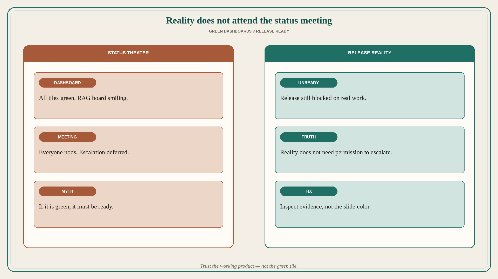

Reality does not attend the status meeting
Source: Scrum.org (@Scrumdotorg) · Steven Deneir
original post
What it claims
The dashboard turned green. The release stayed exactly as unready as it had always been. Reality does not attend the status meeting — and does not need your permission to escalate. Steven Deneir (via Scrum.org): green tiles and nodding rooms are not evidence that the Increment is Done.
Why it matters for a PO
POs own the decision of what “ready to release” means against the Definition of Done and real customer risk. Status theater — RAG boards, slide color, verbal “on track” — can invent a ready release while known defects, missing acceptance, or unresolved dependencies sit untouched. Empiricism inspects working product and outcomes, not optimism on a dashboard.
3 takeaways
- Green status is a claim; readiness is evidence against DoD and known risks.
- Reality escalates whether or not the meeting invited it — surface blockers early.
- Ask “what would still fail if we released Friday?” before you trust the tile.
Practice this week
For the next release-bound Increment, open Sprint Review or a release check with three columns: Green-on-dashboard / Still not Done / Evidence. Move every known gap into the middle column with an owner and a date. Refuse “green enough” language until the middle column is empty or explicitly accepted as residual risk by the people who own the outcome.